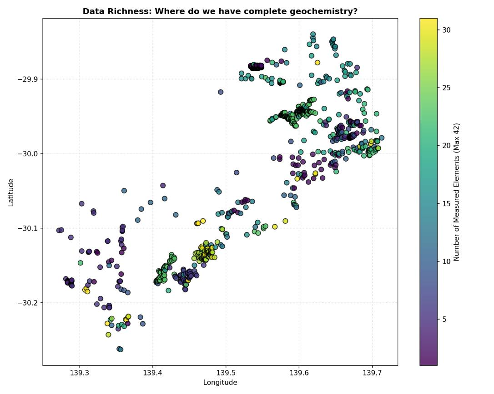

Capítulo 2 · 1.333 → 1.020 localizaciones · censura >99% en algunas variables
Limpieza e integridad
Coordenadas inconsistentes, datos censurados, redundancia espacial. Los duplicados se agregan por media aritmética.
De 1.333 registros a 1.020 localizaciones únicas. Ese es el saldo de la limpieza, y la diferencia no son errores borrados: son muestras que estaban contadas varias veces en el mismo punto del mapa. Antes de cualquier estadística, el archivo tuvo que pasar por cuatro fases en orden, y cada una cambia lo que las siguientes pueden ver.
En este capítulo: cómo llegaron las coordenadas, qué significa que a una variable le falte más del 99 %, por qué 86 muestras en un solo punto sesgan todo el análisis, y con cuánto archivo de verdad se queda uno al final.
Lo primero: que los números sean números
El archivo Rock_geochemical_data.csv junta varias campañas de muestreo independientes, y se nota. Las coordenadas mezclaban convenciones: unas con formato internacional y otras con el europeo, con puntos como separadores de miles, del tipo 1.394.927. Leídas a ciegas, esas no son coordenadas, son texto. Hubo que escribir funciones propias para interpretarlas y convertirlas a números de coma flotante antes de poder dibujar un solo punto.
De paso, los encabezados como "Au (ppb)" se normalizaron a Au_ppb: nombres que un programa puede manipular sin tropezar con espacios y paréntesis.
Lo que falta, y cuánto
La palabra técnica es censura: valores que no están, casi siempre porque esa campaña no midió ese elemento. La tabla de los diez peores lo dice todo:
F_ppm: 100 % ausente. Cero valores válidos.Cl_ppm,B_ppm,Fe_ppm: 99,92 % ausente, un solo valor válido cada una.S_ppm: 99,77 %, tres valores.Cr_ppm,Ba_ppm,Sr_ppm: 98,79 %, dieciséis valores.Hg_ppm: 98,72 %, diecisiete.Pd_ppb: 98,42 %, veintiuno.
Y en el otro extremo, las más completas: Cu_ppb con el 69,56 % válido (923 valores), Co_ppm 65,03 %, Zn_ppm y Th_ppm 64,66 %, Pb_ppm 64,13 %, U3O8_ppm 63,07 %, Ni_ppm 58,33 %, V_ppm 58,18 %, Sn_ppm 56,59 % y Y_ppm 53,5 %. La variable más completa del archivo le falta a casi un tercio de las muestras.

La completitud global del subconjunto final es del 35,88 %. Al menos 13 de las 80 variables geoquímicas superan el 97 % de ausencia. Y los metales preciosos, que son la pregunta: oro con el 43 % válido, plata con el 44 %. Se consideraron suficientes para modelar, con la condición, escrita desde aquí, de interpretar todo con cautela estadística.
El mismo punto, 86 veces
La comprobación espacial reveló algo que ninguna tabla de ausentes enseña: registros distintos con coordenadas idénticas. El caso extremo, un solo par de coordenadas (139,288; −30,176) asociado a 86 muestras distintas. Los cinco puntos más repetidos acumulaban 86, 60, 8, 4 y 4 registros.
Si se dejara así, ese punto pesaría 86 veces más que cualquier otro en cada promedio, cada variograma y cada mapa. Es lo que se llama sesgo de sobremuestreo. La solución tuvo dos pasos: agrupar los registros que comparten coordenadas, y resumir cada variable química con su media aritmética dentro del grupo. Eso además consolidó información dispersa: casos en que un registro traía el oro y otro, en el mismo sitio, traía el cobre.
Resultado: 1.020 localizaciones únicas, sin sesgo de sobremuestreo y sin perder representatividad espacial.
Ponerle geología debajo
Con los puntos ya limpios, cada muestra se convirtió en un objeto geométrico y se cruzó con el mapa geológico regional para asignarle su unidad litoestratigráfica: la roca en la que cayó. Y se recortó estrictamente al área de estudio. Ese cruce es el que permitirá, tres capítulos más adelante, preguntar si el oro prefiere ciertas rocas.
Lo que queda establecido
Coordenadas convertidas, nombres normalizados, censura medida variable por variable, duplicados espaciales agregados por la media, y cada muestra con su unidad geológica. El archivo pasó de 1.333 registros a 1.020 puntos, y el oro solo está medido en el 43 % de ellos. El siguiente capítulo abre por fin la distribución del oro, y descubre que no se parece en nada a una campana.